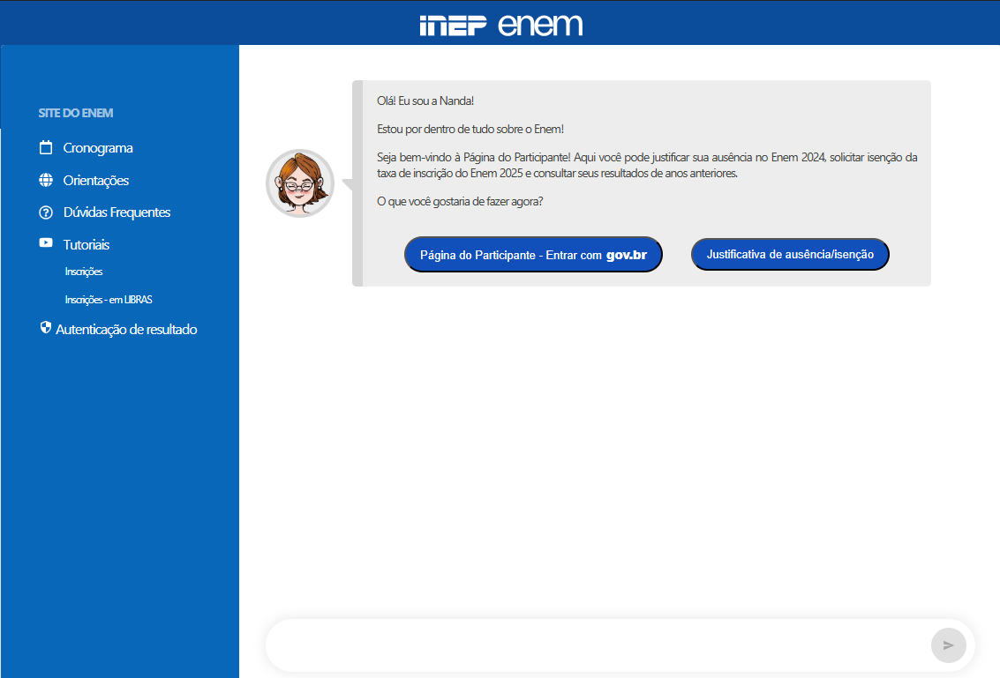
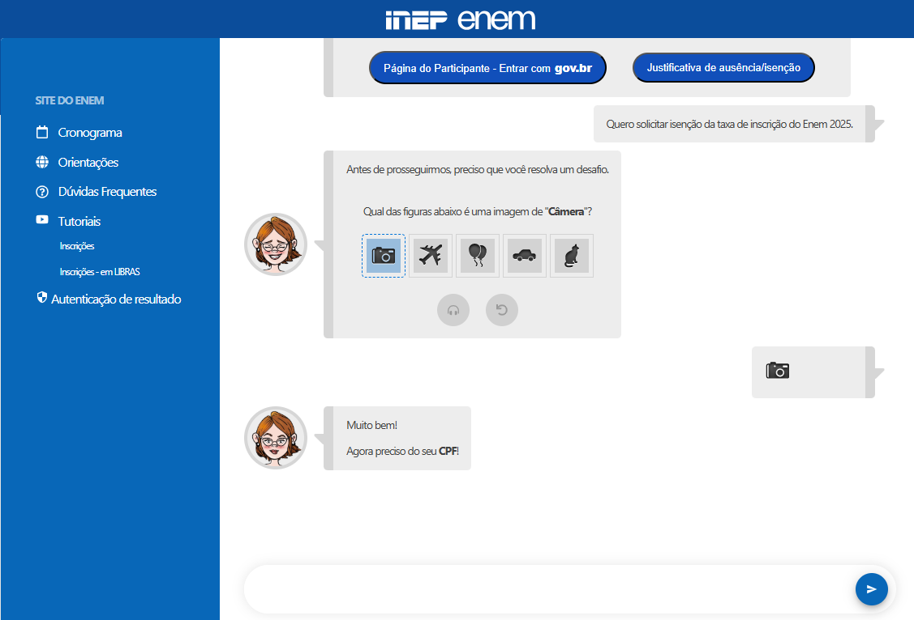
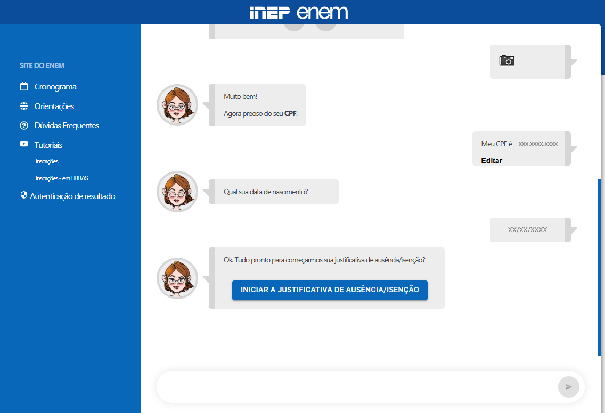
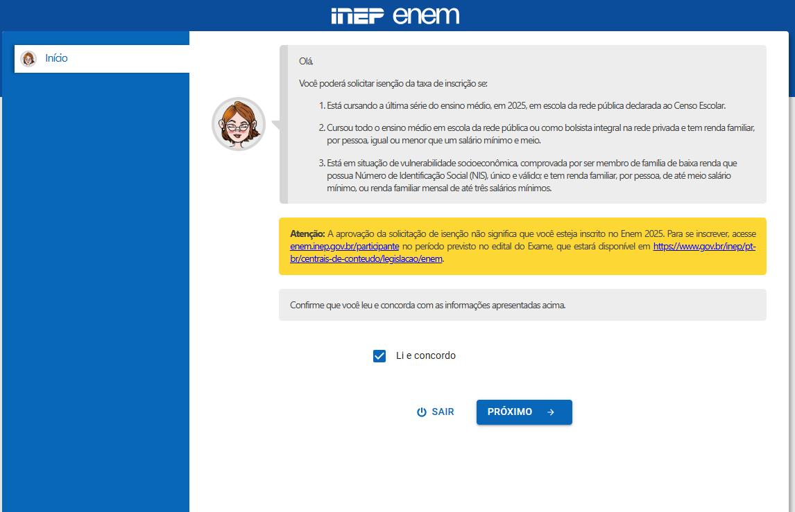
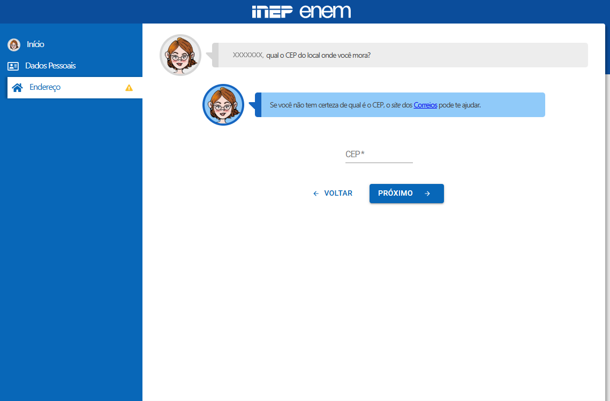
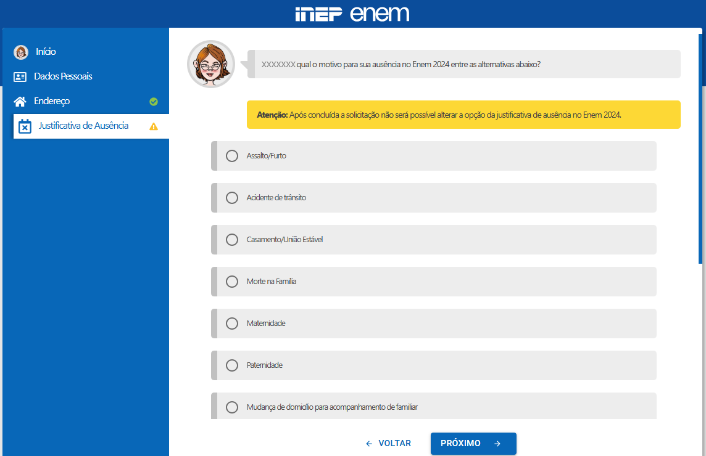
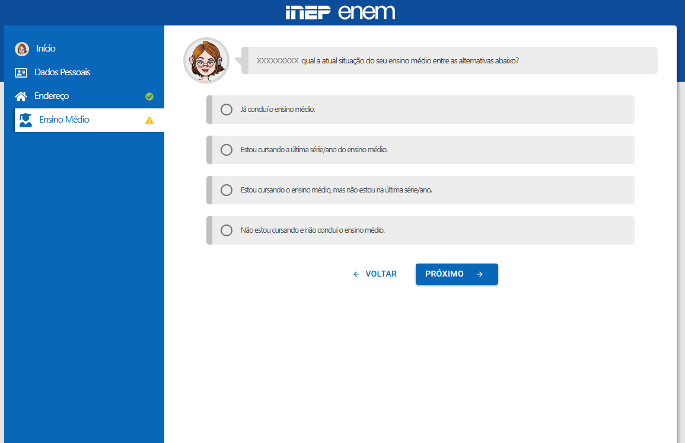
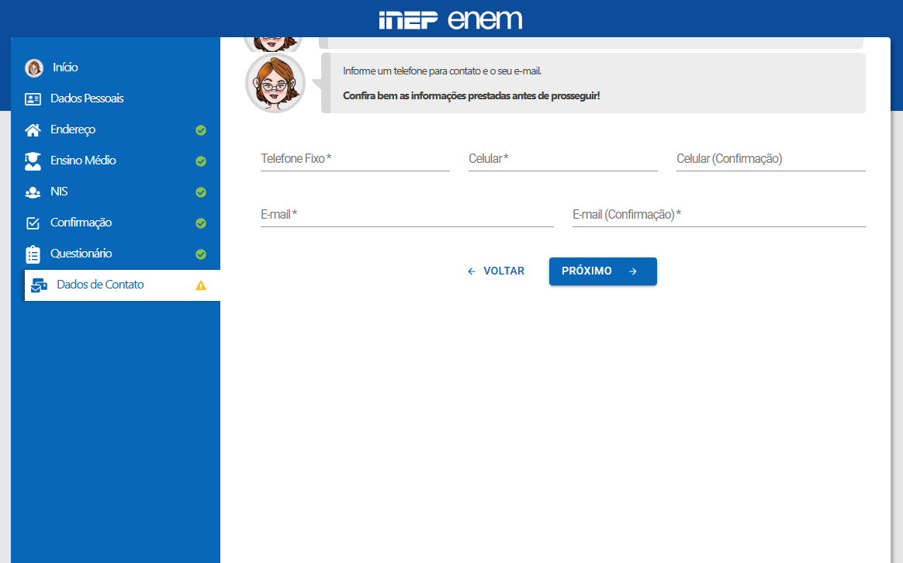
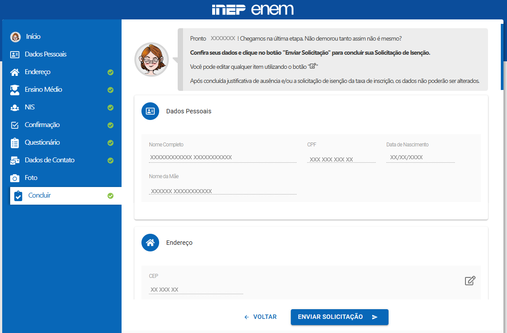

Acesse a Página do Participante e clique no botão “Justificativa de ausência/isenção”. 
Após responder o desafio de autentificação, informe seus dados pessoais, como CPF e data de nascimento. 
Na sequência, clique no botão “Iniciar a justificativa de ausência/isenção”. 
A tela seguinte apresentará os critérios para solicitar a isenção da taxa de inscrição. Caso o participante se enquadre nos requisitos, basta clicar em “Li e concordo” e, depois, em “Próximo”. 
Confira seus dados e clique em “Próximo”. 
Preencha o campo CEP e, em seguida, complete as informações do seu endereço e aperte o botão “Próximo”. 
Se o participante não compareceu aos dois dias do Enem anterior, deverá justificar a ausência. É necessário informar o motivo da ausência e enviar a documentação exigida. 
A etapa seguinte é referente ao ensino médio. Responda ao questionário e, em seguida, qual tipo de escola frequentou. Clique em “Próximo”. 
O participante que possuir o Número de Identificação
Social (NIS) deve informá-lo e clicar em “Próximo”.
Caso não seja cadastrado no NIS, basta selecionar a opção “Não
tenho NIS”. Em seguida, responda ao Questionário
Socioeconômico. Ao todo, são 23 perguntas. 
Após responder ao questionário e confirmar as respostas, informe os dados solicitados (telefone, celular e e-mail). 
Envie uma foto para personalizar sua Página do Participante do Enem. 